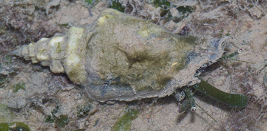
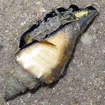
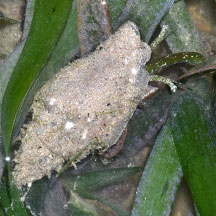

|
|
| shelled snails text index | photo index |
| Phylum Mollusca > Class Gastropoda > Family Strombidae |
| Black-lipped
conch Canarium urceus Family Strombidae updated Sep 2020
Where seen? This narrow conch with black lips is sometimes seen in seagrass areas on our shores. Elsewhere, they are found on sand or sandy mud bottoms, sometimes associated with sparse algae. Often occurring in colonies. Intertidal and sublittoral zones to a depth of about 40 m. It was previously known as Strombus urceus. Features: 3-5cm long. Shell heavy thick, long and narrow, lip slightly flared quite wavy. The flared shell protects the long proboscis as the animal sweeps the bottom for titbits. Upperside smooth often covered in silt and sometimes with encrusting plants and animals. Shell opening is shiny black, although in some, this may appear as just a black border around the edges of the shell's underside. Body greenish sometimes with white or with beige spots. Large eyes on eyestalks, each eyestalk has a tentacle, the purpose of which is not known. Like other conch snails, it hops using the knife-like operculum at the tip of a long muscular foot. |
 |
 |
| Human uses: The snails are actively
collected in the Philippines and often sold in the markets of northern
Luzon. Shell frequently used to make decorative items. Status and threats: The Black-lipped conch is listed as 'Vulnerable' on the Red List of threatened animals of Singapore. It used to be abundant in the 1970s. |
| Black-lipped conch snails on Singapore shores |
On wildsingapore
flickr
|
| Other sightings on Singapore shores |
 Labrador, Nov 18 Photo shared by Loh Kok Sheng on facebook. |
Links
References
|